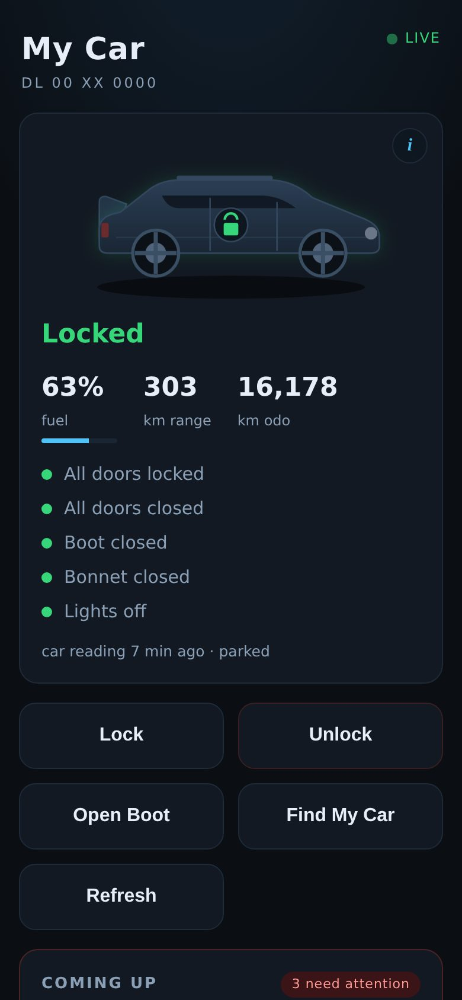
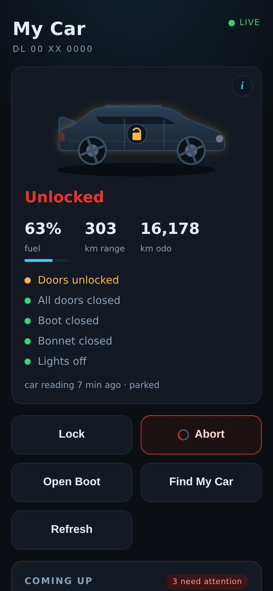
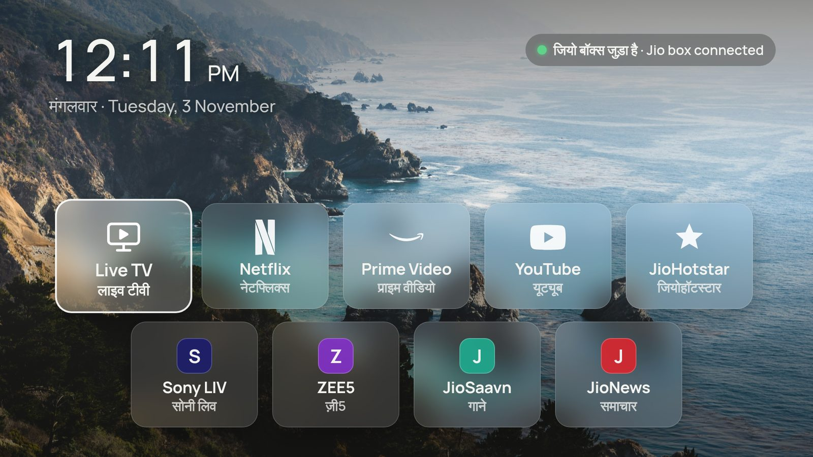
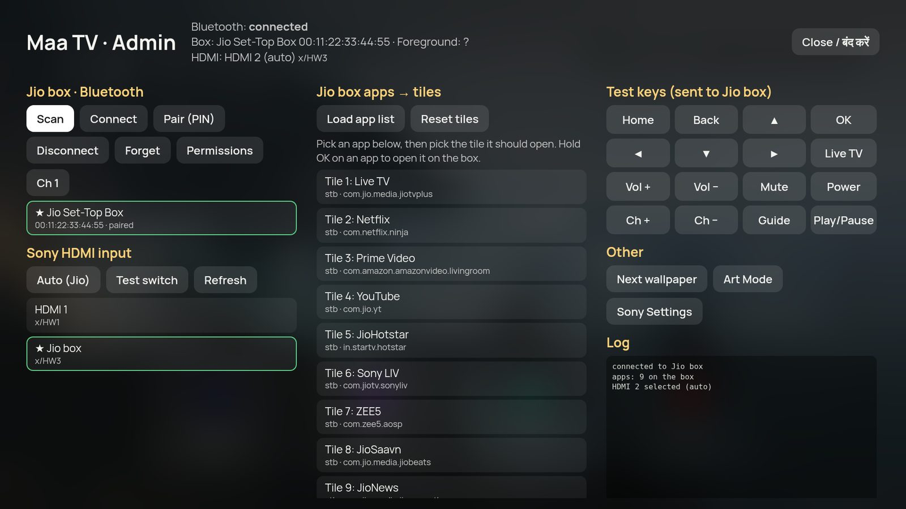

DIY & Home Lab Projects
Personal projects I build and run at home, each one solving an everyday annoyance.
-
A faster companion app for my connected car
Why: the official app takes about two minutes just to open and show the car's status. Mine shows it instantly.
A React PWA served by a single static Go binary that talks to my car's connected service for status and everyday remote actions. It keeps the session alive in the background, so there's no repeated login and no wait. It runs on my home server and ships as OpenWrt packages, a LuCI app and an Android WebView wrapper.Screenshots use demo data.

-
A home services hub from a retired smart-home gadget
Why: my router was getting overloaded with side jobs, and the old hardware in the cupboard deserved a second life.
A repurposed Ninja Blocks BeagleBone now runs Debian and the house's background jobs: a Bluetooth LE monitor for the home power-backup system, alerts to a family Telegram group, automatic filing, follow-up and rating of utility service requests, Mosquitto MQTT for sensors, and the home phone system and EcoFlow automations below. Every app gets private HTTPS at home and away through Tailscale with split-horizon DNS. Its original 433 MHz radio cape now runs custom firmware for raw RF capture.
-
Maa TV: a simple TV launcher for my mom
Why: juggling a TV remote, a set-top box remote and input switching was too fiddly for my mom.
A clean Android TV launcher with big bilingual (English and Hindi) tiles. One tap switches to the right input and controls the set-top box, so one remote and one screen do everything. Held buttons pass straight through, so fast-forward and rewind behave just like the box's own remote. Pluggable set-top box support: the Jio box over Bluetooth, any Android TV box such as Airtel's over Wi-Fi with on-screen pairing, and plain HDMI input switching for anything else.
The admin screen pairs the Jio set-top box over Bluetooth and picks the Sony TV's HDMI input. Device names are placeholders.

-
An OpenWrt home network I actually control
Why: stock router firmware is limited and rarely patched.
OpenWrt on my router runs aria2 downloads to attached storage, a WireGuard VPN, local DNS, and IPv6 routing tuned so the home phone system can register with the fiber landline.
-
A home phone system and intercom
Why: the family should be able to ring each other around the house and still use the home landline from any phone.
An Asterisk PBX on the home hub replaced our old push-to-talk intercom. Family phones run Linphone with encrypted calls (TLS and SRTP), short extensions, a ring-everyone number and texts between them. A Jio fiber bridge is part of the setup, so any extension can make outbound calls on the home landline. I cross-compiled Asterisk and the bridge for the hub's ARM board.
-
Call Home: a one-tap watch app for my mom
Why: in an emergency, my mom shouldn't have to dig through a phone to call one person and hope they pick up.
A Wear OS app with one big button. It calls over the home phone system, which is faster to connect than a regular call and rings every family phone at once, so whoever is nearest answers. The layout is sized for her large font setting. So far she's used it for everything except an emergency.
-
EcoFlow power automations
Why: the home backup battery and its car-alternator charger shouldn't need babysitting.
Automations that run an EcoFlow Delta 2 and Alternator Charger together. A Go service with a PWA on the home hub works through an ordered rule list: switch between charging the Delta from the car battery and topping the car battery back up, depending on the time of day, and stop when temperature, voltage or charge level crosses a limit. Every rule change gets a dry run before it goes live.
Freelance Projects (2007 – 2012)
-
Video Conversion and mobile delivery for SVRS:
SVRS is a service that allows deaf and mute people to communicate using video. When someone calls such person, call is redirected to a ASL interpreter who transcribes the call into a sign language video. This video can then be viewed by the person.
My client was using their services. Unfortunately they only provided videos in wmv format which were not viewable on mobile. My responsibility was to create a system which could parse incoming emails from the service, download the video from their website, convert it to a proper format and optimize it for streaming to mobile. I setup the system from scratch using PHP for email parsing, video download and conversion queue management, ffmpeg for video conversion and Darwin streaming server for delivery.
-
Social Engine based websites with multiple modules:
Created websites using social engine 3 for online communities to share music, articles and comment and vote on them. Created multiple custom modules to allow voting, prizes and much other content on the website. Worked extensively with Social engine internal API.
-
Menuvenues.com:
Website allows users to checkout restaurants, reserve tables and order take away.IT also allows restaurants to create and customize their profiles, menu’s, booking timings etc… I was directly involved with the client as the sole developer in creating the front end and backend functionality of the website, Facebook authentication, food ordering and payment collections, search and indexing functionality.
-
Ecommerce and Wordpress integration:
Client had asked me to create a system where users could post their clothes designs and other users will comment and vote on them. Users had the ability to reserve those designs on the site. If the design was popular and was converted to a product, the reserved orders were charged. I was entirely responsible for creating the system in Wordpress and integrating with osCommerce to allow uploading designs and then converting those designs to actual products in osCommerce.
-
Google OAuth, Adsense/ Analytics API Integration:
Client needed a solution to collect traffic and income details for websites from difference analytics and ad API, then combine them in a quick easy to read format. So a user could keep track of income and changes in income without looking at lots of different reports and using piles of spreadsheets. My job was to create version 1 of this tool which allowed anyone to login using their Google accounts and add websites to be tracked (Google Analytics Data and Adsense Data).
-
Custom Friend
notification module for
Comet Chat:
Comet chat is a custom application that allows users of a site to chat with one another using a bar in the footer. (http://www.cometchat.com/) My job was to create a custom module allowing comet chat users to have instant notification of friend requests.
-
Youtube API Integration:
Created a niche website that pulls videos from Youtube API for keywords specified by the client in real time and displays them as a gallery. Extensive use of GData protocol for integration with Youtube API.
-
RSS Aggregator component for Joomla:
Created a custom component for Joomla allowing site admin to specify various RSS Feeds to be aggregated, parsed and displayed on their frontend. Technologies used RSS parsing and normalization, custom caching.
-
phpBB Sitemap generator module:
Created a custom module for a client to generate sitemaps for their forum and submit to Google, Yahoo etc...
-
Twitter Single Sign On and API:
Created user management code for a custom PHP website to allow users to sign in with their twitter account and allow website read/write access to user’s data using Twitter API.
-
Custom Live Chat Integration:
Installed and customized an open source live chat solution Mibew Messenger for a client allowing visitors on their website to chat with support executives while browsing the site. Customized the design and functionality to allow multiple site integration using a single live chat install.
-
Facebook Page
scraping:
Client had created a solution where local people in the area could post updates about important events on a Facebook page to create a sort of news aggregated by the people. My job was to parse this Facebook page for the client, collect relevant posts, with media and post them to their customized forum based on uBB and blog based wordpress.
-
PHP/ JS Tree view for large hierarchical structures:
Client had a service which allowed users to backup and manage files to cloud providers such as Amazon S3, Rackspace cloud etc.. I was asked to create a custom tree view component. It required reading the list of files along with their version information from compressed proprietary flat files, sorting them and displaying them to user to allow selection and restoring. I created a custom jQuery tree view component along with backend PHP service that parsed the list of files and sorted them using temporary file sorts and sent the data to front end JS for rendering tree.